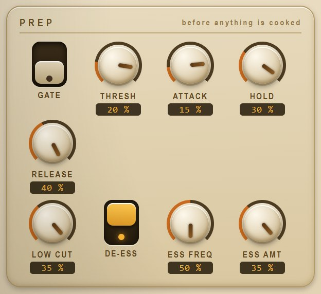
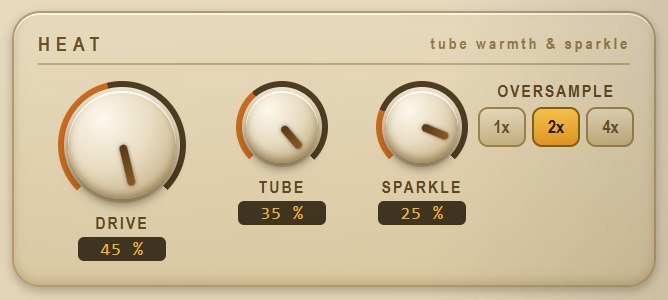
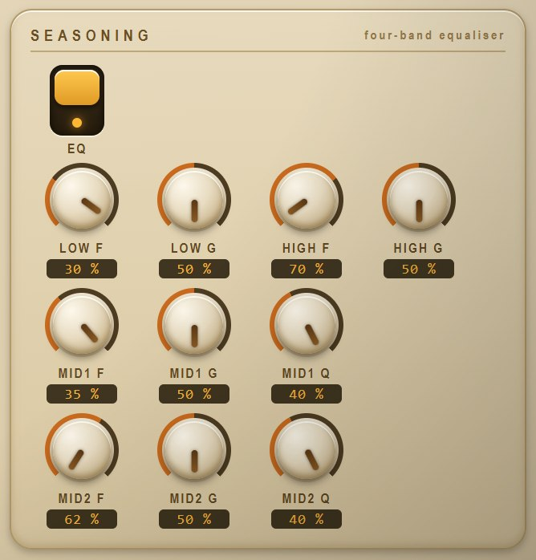

The strip around it
prep · heat · seasoning · pressurePREP

A downward gate with hold (sing through it, it opens; stop, it closes on the spill), a fourth-order low cut, and a de-esser that judges sibilance by the ratio of high band to everything — a singer getting louder is not an ess and is not ducked like one. Measured: a bare ess ducked 18.8 dB while a vowel through the same settings moved 0.00 dB.
HEAT

The tube stage: an asymmetric soft clip (even harmonics — warmth), with SPARKLE driving the band above 5.5 kHz into its own gentle clip and folding it back — an exciter. Oversampled 1×/2×/4× at constant latency. The stage is RMS-matched around itself, so DRIVE changes density, not volume — and at zero it is bit-transparent, measured at 0.33 dB worst-harmonic deviation for the whole bypassed strip.
SEASONING

Four bands: low shelf, two parametric mids, high shelf. RBJ curves — the ones every engineer's ear is calibrated against. For a growl, try cutting 300–500 Hz slightly and adding 2–4 kHz: the words come forward.
PRESSURE

A soft-knee compressor with two-stage smoothing (a fast stage catches, a slow one breathes — the analogue read), auto or manual makeup; then a lookahead limiter (3 ms) with a soft ceiling behind it that is never off. Measured: 12 dB more in → 4.6 dB more out at the default ratio; the ceiling held against a 3× overdriven input.